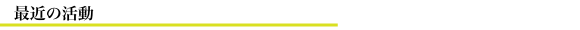

ここでは、学校行事の運営や会誌の制作・予算折衝のような、例年生徒会が行っている活動以外に、最近生徒会が行っている取り組みについて紹介します。

- 第63代生徒会長 小坂真琴 就任挨拶2015年 1月25日
- 第62代生徒会長 高島崚輔 退任挨拶2015年 1月25日
- 第62代生徒会長 高島崚輔 就任挨拶2013年 7月30日
- 第61代生徒会長 南藤優明 退任挨拶2013年 6月28日
- 第61代生徒会長 南藤優明 就任挨拶2013年 1月26日
- 第60代生徒会長 寺田有一郎 就任挨拶2011年11月10日
- 第59代生徒会長 吉川慶彦 退任挨拶2011年 7月 1日
- 第65回灘校文化祭「Why not?」のご案内2011年 4月26日
- 新中一企画2011年 4月 9日
- 生徒会規約の改正案について2011年 3月18日
- 東日本大震災 被災地支援金募金2011年 3月15日